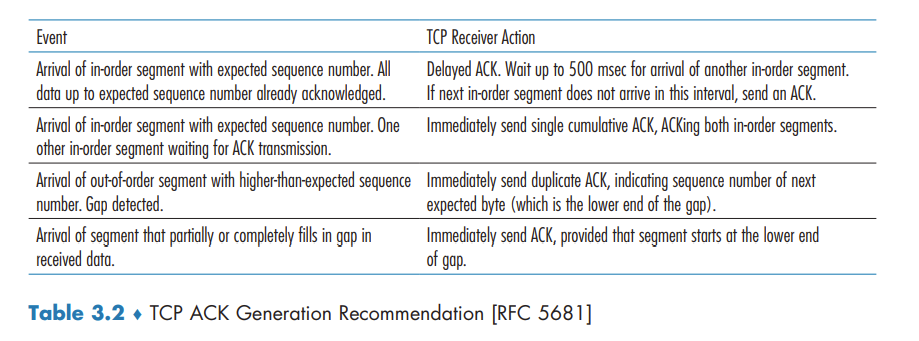

Connection-Oriented Transport TCP
Connection-Oriented Transport: TCP
In order to provide reliable data transfer, TCP relies on many of the underlying principles discussed in the previous section, including error detection, retransmissions, cumulative acknowledgments, timers, and header fields for sequence and acknowledgment numbers
The TCP Connection
TCP is said to be connection-oriented because before one application process can begin to send data to another, the two processes must first "handshake" with each other.
TCP protocol runs only in the end systems and not in the intermediate network elements (routers and link-layer switches), the intermediate network elements do not maintain TCP connection state.
A TCP connection provides a full-duplex service: If there is a TCP connection between Process A on one host and Process B on another host, then application-layer data can flow from Process A to Process B at the same time as application-layer data flows from Process B to Process A.
A TCP connection is also always point-to-point, that is, between a single sender and a single receiver. So-called "multicasting" - the transfer of data from one sender to many receivers in a single send operation - is not possible with TCP.
The process that is initiating the connection is called the client process, while the other process is called the server process.
TCP directs this data to the connection’s send buffer, which is one of the buffers that is set aside during the initial three-way handshake. From time to time, TCP will grab chunks of data from the send buffer and pass the data to the network layer.
The maximum amount of data that can be grabbed and placed in a segment is limited by the maximum segment size (MSS). The MSS is typically set by first determining the length of the largest link-layer frame that can be sent by the local sending host (the so-called maximum transmission unit, MTU), and then setting the MSS to ensure that a TCP segment (when encapsulated in an IP datagram) plus the TCP/IP header length (typically 40 bytes) will fit into a single link-layer frame.

TCP Segment Structure

Sequence Numbers and Acknowledgment Numbers
The sequence number for a segment is the byte-stream number of the first byte in the segment.
The acknowledgment number that Host A puts in its segment is the sequence number of the next byte Host A is expecting from Host B.
Because TCP only acknowledges bytes up to the first missing byte in the stream, TCP is said to provide cumulative acknowledgments.
Telnet: A Case Study for Sequence and Acknowledgment Numbers
Note that the acknowledgment for client-to-server data is carried in a segment carrying server-to-client data; this acknowledgment is said to be piggybacked on the server-to-client data segment
Round-Trip Time Estimation and Timeout
Estimating the Round-Trip Time
SampleRTT, for a segment is the amount of time between when the segment is sent (that is, passed to IP) and when an acknowledgment for the segment is received. EstimatedRTT is a weighted average of the SampleRTT values:
EstimatedRTT = (1 – α) * EstimatedRTT + α * SampleRTT
The recommended value of α is α = 0.125. In addition to having an estimate of the RTT, it is also valuable to have a measure of the variability of the RTT. DevRTT is an estimate of how much SampleRTT typically deviates from EstimatedRTT:
DevRTT = (1 – β) * DevRTT + β * | SampleRTT – EstimatedRTT |
The recommended value of β is 0.25.
Setting and Managing the Retransmission Timeout Interval
TCP’s method for determining the retransmission timeout interval:
TimeoutInterval = EstimatedRTT + 4 # DevRTT
An initial TimeoutInterval value of 1 second is recommended.
Reliable Data Transfer
TCP creates a reliable data transfer service on top of IP’s unreliable best effort service.
there are three major events related to data transmission and retransmission in the TCP sender: data received from application above; timer timeout; and ACK receipt.
- TCP receives data from the application, encapsulates the data in a segment, and passes the segment to IP.
- TCP responds to the timeout event by retransmitting the segment that caused the timeout. TCP then restarts the timer.
- TCP compares the ACK value y with its variable SendBase. SendBase–1 is the sequence number of the last byte that has been received correctly and in order at the receiver.
A Few Interesting Scenarios
Doubling the Timeout Interval
Each time TCP retransmits, it sets the next timeout interval to twice the previous value, This modification provides a limited form of congestion control.
Fast Retransmit
When a segment is lost, this long timeout period forces the sender to delay resending the lost packet, thereby increasing the end-to-end delay. Fortunately, the sender can often detect packet loss well before the timeout event occurs by noting so-called duplicate ACKs.
Since TCP does not use negative acknowledgments, the receiver cannot send an explicit negative acknowledgment back to the sender. Instead, it simply reacknowledges (that is, generates a duplicate ACK for) the last in-order byte of data it has received.
If the TCP sender receives three duplicate ACKs for the same data, it takes this as an indication that the segment following the segment that has been ACKed three times has been lost. In the case that three duplicate ACKs are received, the TCP sender performs a fast retransmit, retransmitting the missing segment before that segment’s timer expires.

Go-Back-N or Selective Repeat?
TCP’s error-recovery mechanism is probably best categorized as a hybrid of GBN and SR protocols.
Flow Control
TCP provides a flow-control service to its applications to eliminate the possibility of the sender overflowing the receiver’s buffer.
TCP provides flow control by having the sender maintain a variable called the receive window. Informally, the receive window is used to give the sender an idea of how much free buffer space is available at the receiver.
From time to time, the application process in Host B reads from the buffer. Host B tells Host A how much spare room it has in the connection buffer by placing its current value of rwnd in the receive window field of every segment it sends to A. Initially, Host B sets rwnd = RcvBuffer.
The TCP specification requires Host A to continue to send segments with one data byte when B’s receive window is zero.
TCP Connection Management